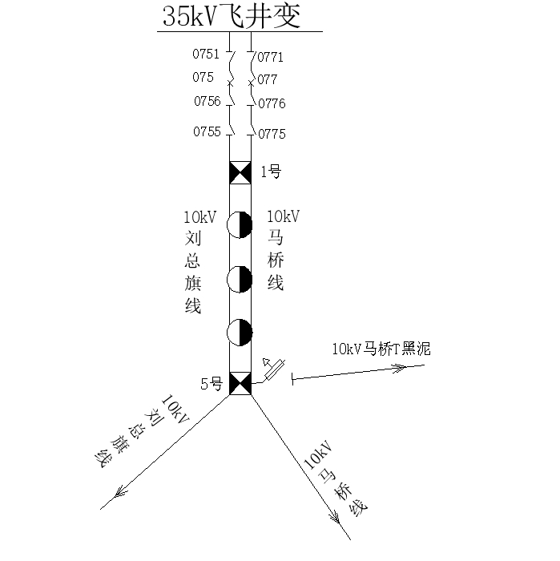

电力工程安全规程考试刷题系统
案例2
案例1
案例2
案例3
案例4
案例5
案例6
案例7
案例8
案例9
案例10
案例11
案例12
案例13
案例14
案例15
案例16
案例17
案例18
案例19
案例20
案例21
案例22
案例23
案例24
案例25
案例26
案例27
案例28
案例29
案例30
返回首页
案例背景
XX电力工程公司XX班工作负责人李XX，带领工作班人员蒋XX、江XX、孙XX、罗XX等10人及临时工2人，进行XX供电局"10kV马桥线1-5号杆段导线更换"工作，计划工作时间：2018年08月19日08时00分至2018年08月19日18时00分，其中10kV刘总旗线与10kV马桥线同塔架设且属于同一调度管辖。
电气主接线图

1
单选题
题目内容加载中...
上一题
提交答案
下一题
答题统计
当前进度：
0/15
已答题目：
0
正确率：
0%
得分：
0
最终得分:
0
/15
题目导航